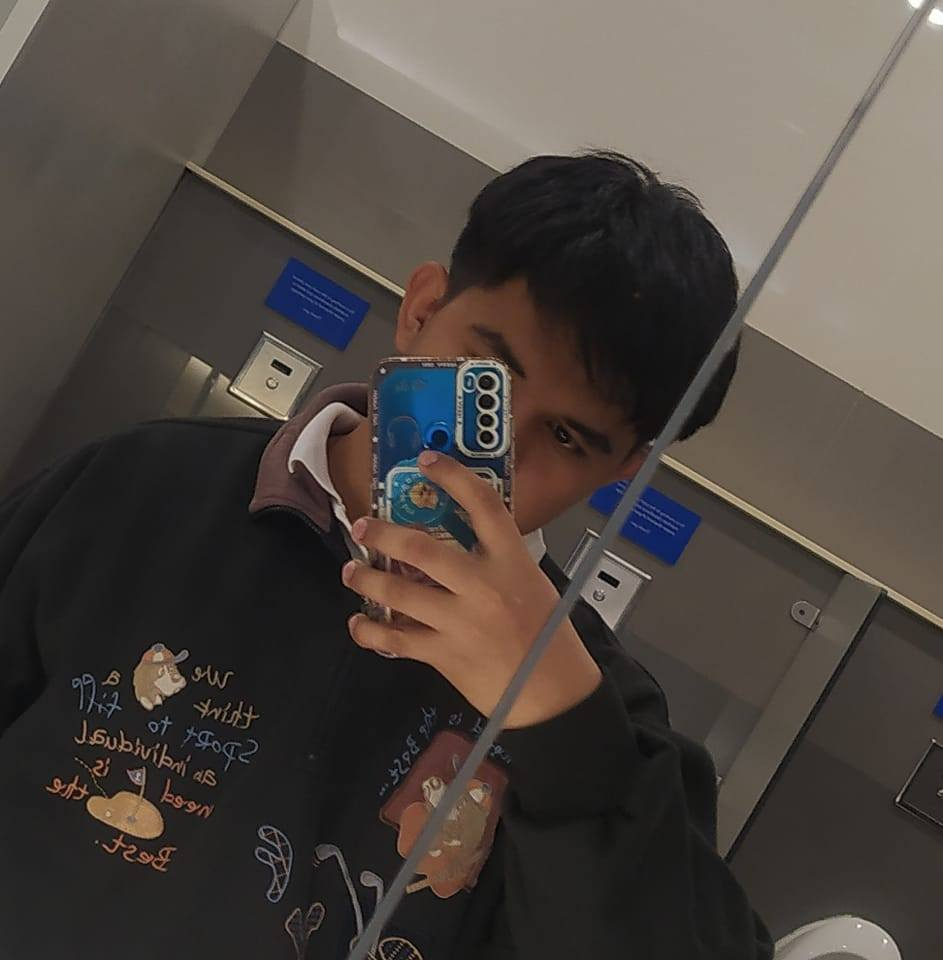

Frontend
HTML
CSS
JavaScript
Responsive Design
Portfolio
I am a
I build practical digital experiences and keep improving through every project. This portfolio highlights my work, my strengths, and the direction I want to grow as a developer.

About
I am a motivated learner who enjoys solving problems, adapting quickly, and improving my technical skills through hands-on work.
Hardworking, critical thinking, problem-solving, time management, and working under pressure.
Background in software and systems work, with additional experience in Digital editing.
Graduate of computer Science in College of Mary Immaculate - 2026
Skills
These are the tools and technologies I use, understand, or am actively improving as I continue building projects.
Work
A selection of academic, practice, and concept projects that reflect my interests in software, usability, and problem solving.
Featured Thesis Project
Handigo is a gesture-based computer control system developed as a thesis project. It enables users to interact with desktop and laptop computers hands-free as an alternative to traditional input devices like a mouse and keyboard.
Using a standard webcam, the system detects and interprets hand gestures in real time, then converts them into computer commands. The project focuses on touchless interaction, accessibility, and user comfort.
Project 02
A Python-based clone project inspired by a fast-food ordering system and customer flow.
Project 03
A digital voting system for managing candidates, casting votes, and viewing results.
Project 04
A combined social and mood-based project inspired by posting, feeds, expression, and user interaction.
Project 05
An e-commerce project focused on product browsing, purchases, and a clean shopping flow.
Project 06
A simulation project that visualizes earthquake wave movement and seismic activity behavior.
Project 07
A banking application concept for handling accounts, transactions, and financial records.
Project 08
An AR game project combining interactive gameplay with augmented reality experiences.
Project 09
A website project for a beauty or skincare brand with product presentation and clean visuals.
Project 10
An expert system that helps recommend motorcycle builds based on user needs or preferences.
Project 11
A flash card system designed to improve memory, study habits, and fast review sessions.
Project 12
A simulation project that models the behavior and control flow of an electric kettle.
Project 13
A fun language conversion app that translates normal text into a Jejemon-style format.
Project 14
A conversational bot project for answering prompts, responding to users, and simulating chat.
Project 15
An AI chatbot project designed to assist users with questions, responses, and school-related interaction.
Project 16
A detection project aimed at identifying misleading content or suspicious news articles.
Project 17
A Google-like search concept focused entirely on dinosaurs, facts, and prehistoric discovery.
Project 18
A travel-focused app concept for discovering destinations, planning trips, and exploring ideas.
Contact
If you want to collaborate, hire, or learn more about my work, feel free to reach out.